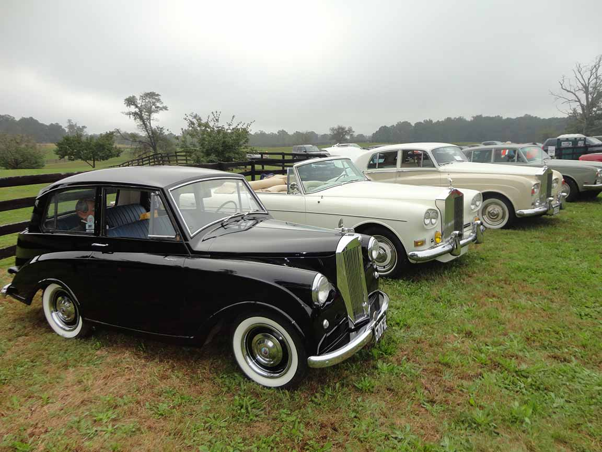

<link href="{{ site.baseurl }}/events/article.css" rel="stylesheet" type="text/css">
<main>
    <article>
        <ol id="breadcrumb">
            <li>
                <a href="{{ site.baseurl }}/">Home</a>
            </li>
            <li>
                <a href="{{ site.baseurl }}/events">Events</a>
            </li>
            <li>
                <a href="{{ site.baseurl }}/events/local">Local</a>
            </li>
            <li>“Blossom” Blooms in Virginia, USA 2018</li>
        </ol>
        <div id="content">
            <h1>“Blossom” Blooms in Virginia, USA</h1>
            <h2>7<sup>th</sup> October 2018</h2>
            <h3>Report by Dave Rutherford (1218)</h3>
            <p>At the 200+ entry, all-British Hunt Country Classic on Oct 7 in Middleburg, Virginia, my lovely Blossom (first in class, thank you) visits briefly with her wealthier cousins. The adjacent Corniche was initially owned by actress Debbie Reynolds, and then for years by comedienne Lucille Ball.</p>
            
            
        </div>
    </article>
    <aside>
        <h2>Members’ cars in attendance</h2>
        <ul class="disableListStyles">
            <li>
                <h3>Dave Rutherford</h3>
            </li>
        </ul>
    </aside>
</main>
